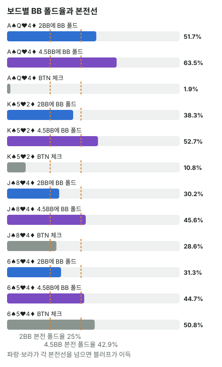

안녕하세요. E04에서는 c-bet을 레인지 구성으로 읽었고, A08에서는 c-bet이 본전이 되는 폴드 비율을 계산했죠. 오늘은 이 둘을 한자리에 놓아요.
"상대가 많이 접으면 c-bet을 많이 하면 된다"는 말은 반만 맞아요. 오늘은 솔버 표에서 어디까지 맞고, 어디서부터 다른 게 필요한지를 직접 확인해 볼게요.
이 글에서 배울 것
- 순수 블러프 c-bet의 본전 폴드율이 왜 "벳 ÷ (팟 + 벳)"인지, 직접 따져 보는 법
- 솔버의 BB 폴드 비율이 c-bet 빈도와 어떤 경향으로 이어지고, 그 경향이 어디서 깨지는지
- c-bet의 진짜 비교 상대는 0이 아니라 "체크했을 때의 몫"이라는 것, 그리고 상대 레이즈가 그 비교를 어떻게 바꾸는지
오늘의 조건
E26·E04와 같아요. 헤즈업 100BB·빅앤티, BTN 2.5BB 오픈 → BB 콜, 플랍 팟 6BB, BB 체크 뒤 BTN 차례예요. SRP는 싱글레이즈 팟(프리플랍에 레이즈 한 번, 콜 한 번)이에요. 프리플랍 레인지는 헤즈업 프리플랍 솔버의 빈도 그대로예요.
결론부터 말하면, 이 조건에서는 BB가 어느 보드에서나 본전보다 많이 접어서 블러프 c-bet 자체는 늘 할 만하고, 실제 c-bet 빈도는 BB가 얼마나 접느냐와 함께 얼마나 레이즈로 반격하느냐에 따라 갈려요.
1단계. 순수 블러프의 본전 폴드율
순수 블러프란
순수 블러프 = 콜을 받으면 이길 가능성이 거의 없는 핸드로 하는 벳이에요. 상대가 접을 때만 팟을 가져와요.
4번 벳해 보면 보여요
팟 6BB에 2BB를 블러프한다고 해 볼게요. 이 벳을 4번 해서 1번만 BB가 접는다면요.
- 접은 1번: 팟 6BB를 가져와요
- 콜 받은 3번: 한 번에 2BB씩, 2 × 3 = 6BB를 잃어요
번 돈과 잃은 돈이 같아요. 딱 본전이죠. 그래서 2BB 블러프의 본전 폴드율은 4번 중 1번, 25%예요.
공식과 "몇 대 1"
2BB: 2(벳) ÷ (6(팟) + 2(벳)) = 25% / 4.5BB: 4.5 ÷ (6 + 4.5) = 약 42.9%
거는 돈 ÷ (가져올 팟 + 거는 돈)이에요. 같은 걸 "몇 대 1"로도 말해요. 2BB를 걸어 6BB를 노리니 3 대 1, 즉 3번 실패하고 1번 성공해도 본전이에요.
팟을 1로 놓으면 2BB는 팟의 1/3, 4.5BB는 팟의 3/4이에요. 그래서 1/3팟 블러프는 언제나 25%, 3/4팟 블러프는 언제나 약 42.9% 접어 주면 본전이에요. 이 값은 A01·A08의 알파와 같아요.
솔버의 BB 폴드 비율 읽기
솔버 표의 BB 폴드 비율은 "BB 체크 → BTN 벳"이라는 한 지점(노드)에서 솔버 BB가 접는 비율이에요. BTN 벳 빈도와 BB 폴드는 서로에게 맞춰진 결과라서, 한쪽이 다른 쪽의 원인이라기보다 함께 정해진 숫자로 읽어요.
2단계. 경향: 많이 접는 보드일수록 체크가 적어요
| 보드 | 2BB에 BB 폴드 | 4.5BB에 BB 폴드 | BTN 체크 |
|---|---|---|---|
| A♠ Q♥ 4♦ | 약 51.7% | 약 63.5% | 약 1.9% |
| K♠ 5♥ 2♦ | 약 38.3% | 약 52.7% | 약 10.8% |
| J♠ 8♥ 4♦ | 약 30.2% | 약 45.6% | 약 28.6% |
| 6♠ 5♥ 4♦ | 약 31.3% | 약 44.7% | 약 50.8% |

첫째: 모든 보드에서 본전보다 많이 접어요
네 보드 모두 2BB에 25%보다, 4.5BB에 약 42.9%보다 많이 접어요. 사실 이번 요약에 들어 있는 플랍 59개 보드 전부가 그래요.
이게 무슨 뜻이냐면, 이 조건에서는 BTN이 아무것도 없는 핸드로 c-bet해도 접게 하는 것만으로 본전 이상이라는 거예요. 블러프가 손해라서 c-bet을 줄이는 보드는 없어요. E26에서 본 것처럼 BB 콜 레인지가 약해서예요.
둘째: 많이 접을수록 체크가 줄어드는 경향
4.5BB 폴드 기준으로 위에서 아래로 줄면서, BTN 체크는 약 1.9% → 약 50.8%로 늘어요. BB가 본전보다 넉넉하게 접는 보드에서는 BTN이 거의 다 벳하고, 여유가 줄어드는 보드에서는 체크가 늘어요. 제목의 질문에 대한 첫 번째 답이에요.
그런데 표 안에도 이상한 곳이 있어요. 2BB 폴드는 6♠ 5♥ 4♦(약 31.3%)가 J♠ 8♥ 4♦(약 30.2%)보다 조금 높은데, 체크는 훨씬 많아요. 2BB 벳에 BB 레이즈가 6♠ 5♥ 4♦는 약 18.8%, J♠ 8♥ 4♦는 약 9.1%예요. 이 레이즈가 다음 단계의 열쇠예요.
3단계. 경향이 깨지는 곳: K♠ 5♥ 2♦ vs 5♠ 3♥ 2♦
그런데 이 경향만으로는 설명이 안 되는 보드가 있어요.
| 보드 | 2BB에 BB 폴드 | 2BB에 BB 레이즈 | BTN 체크 |
|---|---|---|---|
| K♠ 5♥ 2♦ | 약 38.3% | 약 11.5% | 약 10.8% |
| 5♠ 3♥ 2♦ | 약 39.8% | 약 21.6% | 약 42.7% |
BB가 접는 비율은 거의 같은데, BTN 체크는 네 배 가까이 차이 나요. 다른 점은 BB의 레이즈예요. 5♠ 3♥ 2♦에서 BB는 2BB 벳에 레이즈를 거의 두 배로 해요.
핸드 하나로 보면 더 뚜렷해요.
두 보드 모두에서 페어가 없는 핸드들끼리 비교해 볼게요.
| BTN 핸드 | K♠ 5♥ 2♦ 체크 | 5♠ 3♥ 2♦ 체크 |
|---|---|---|
| QJo | 21% | 83% |
| QTo | 28% | 76% |
| J9o | 3% | 34% |
| T9o | 1% | 28% |
같은 '맞은 게 없는 높은 카드' 핸드인데, K♠ 5♥ 2♦에서는 대부분 벳하고 5♠ 3♥ 2♦에서는 체크가 크게 늘어요. 특히 QJo·QTo는 체크가 대부분이 돼요.
왜 그럴까: c-bet의 비교 상대는 0이 아니라 "체크"
본전 폴드율은 "벳 vs 포기"의 비교
본전 폴드율 25%는 "블러프하면 0보다 나은가"를 묻는 숫자예요. 아무것도 없는 핸드가 체크하면 그 팟을 거의 포기하는 셈이라, 비교 상대를 0으로 놓은 거예요.
그런데 QJo는 체크해도 0이 아니에요. 쇼다운에서 BB의 더 낮은 하이카드를 이길 수도 있고, 턴·리버에 Q나 J가 와서 페어가 될 수도 있어요(A22). 그래서 QJo의 진짜 질문은 "벳이 체크보다 나은가"예요.
레이즈가 체크의 가치를 키워요
QJo가 벳했다가 레이즈를 맞으면, 그 핸드가 가진 몫(쇼다운 가능성, 다음 카드)을 버리고 접어야 해요. 체크했으면 지킬 수 있었던 몫이죠.
5♠ 3♥ 2♦에서 BB 레인지에는 A4o·64처럼 이미 스트레이트인 핸드, 54처럼 페어에 양방 스트레이트 드로우까지 있는 핸드, 33·22 셋이 들어 있어요. BB의 콜 레인지가 낮은 카드 위주라서예요. 솔버의 BB는 2BB 벳에 A4o 100%, 64s 99%, 54s 83%, 33 90%를 레이즈하고, 페어에 휠 드로우가 붙은 A5o도 100% 레이즈해요. 그래서 BB 레이즈가 늘고, BTN의 벳은 레이즈에 밀려날 위험이 커져요. 그러면 QJo처럼 체크 몫이 있는 핸드는 벳보다 체크를 골라요.
하나 더 있어요. K♠ 5♥ 2♦에서 QJo는 두 장 다 K 아래라 페어가 돼도 세컨드 이하예요. 5♠ 3♥ 2♦에서는 오버카드 두 장이라, Q나 J만 와도 탑페어가 돼요. 체크 몫 자체가 이 보드에서 더 커요. 레이즈 위험과 체크 몫이 함께 체크를 늘린 거예요.
한 판으로 따라가 보기
Hero가 BTN에서 Q♣J♦를 들었다고 해 볼게요.
K♠ 5♥ 2♦라면 BB는 2BB 벳에 약 38.3% 접고, 레이즈는 약 11.5%예요. 접어 주는 몫이 크고 반격은 적어요. 솔버는 QJo로 벳을 79%, 체크를 21% 섞어요. 섞는다는 건 두 몫이 비슷하다는 뜻이지만, 벳 쪽이 더 많이 나와요.
5♠ 3♥ 2♦라면 BB는 비슷하게 약 39.8% 접지만, 레이즈가 약 21.6%예요. 다섯 번 벳하면 한 번꼴로 레이즈를 맞고 QJo의 몫을 버려야 해요. 솔버는 이 보드에서 QJo를 83% 체크해요.
이게 무슨 뜻이냐면, "얼마나 접나"는 블러프가 가능한지를 정하고, "얼마나 반격하나"와 "체크하면 얼마나 남나"가 실제로 벳할지를 정한다는 거예요.
자주 하는 실수
실수 1. "본전보다 많이 접으니 다 벳" 본전 폴드율은 아무것도 없는 핸드의 기준이에요. 5♠ 3♥ 2♦에서 BB는 본전보다 훨씬 많이 접었지만, QJo는 83% 체크했어요. 대신 "이 핸드는 체크해도 남는 몫이 있나"를 같이 물어요.
실수 2. 폴드율만 보고 레이즈를 안 보기 "이 보드는 상대가 많이 접으니까"로 끝내는 거예요. 같은 폴드율이어도 상대 레이즈가 두 배면 결과가 달랐어요. 대신 상대 레인지에 이 보드로 레이즈할 핸드(이미 된 스트레이트·투페어)가 얼마나 있나를 떠올려요.
실수 3. 솔버 BB의 폴드율을 아무 상대에게나 쓰기 오늘 숫자는 BB가 강한 핸드를 넓게 3벳하는 헤즈업 레인지에서 나왔어요. E26에서 본 것처럼 이 BB의 콜 레인지에는 포켓페어가 33·22뿐이고, A는 A5o~A2o뿐이에요. 3벳을 거의 안 하는 상대라면 콜 레인지에 강한 핸드가 남아 덜 접을 수 있어요. 대신 상대가 프리플랍에 무엇을 3벳으로 보냈는지부터 떠올려요.
"BB가 본전보다 많이 접으면 BB가 손해 보는 거 아니에요?"
좋은 질문이에요. 이 노드만 떼어 보면 BTN의 블러프가 이득을 보니 그렇게 보여요. 하지만 BB가 접는 핸드는 콜해도 이어 가기 어려운 핸드라, 억지로 콜하면 손해가 더 커질 수 있어요. E26에서 본 것처럼 솔버는 핸드 전체를 보고 이 노드에서 접는 쪽을 골라요.
숫자가 뒤집히는 지점
순수 블러프의 기준선은 2BB에 BB 폴드 25%, 4.5BB에 약 42.9%예요. BB 폴드가 이 선 아래로 내려가면 블러프 c-bet은 그 자체로 손해가 돼요. 이번 59개 보드에서는 그런 보드가 없었고, 그 대신 레이즈가 많은 보드에서 체크가 크게 느는 경향이 있었어요.
선생님의 한마디
- c-bet 전에 내 핸드를 "체크하면 남는 게 있나, 없나"로 먼저 나누기
- 없으면 사이즈별 본전 폴드율과 상대 폴드를, 있으면 상대가 레이즈할 핸드를 떠올리기
- 낮고 이어진 보드에서는 상대가 레이즈할 핸드(이미 된 스트레이트·셋·페어+드로우)부터 세어 보기
연습 문제 (같은 조건, 보드만 바꿈)
문제 1. 두 보드에서 BTN 2BB 벳에 BB는 똑같이 약 35.1% 접어요. 레이즈는 Q♠ 7♥ 3♦가 약 11.5%, T♠ 9♥ 6♦가 약 14.4%예요. 어느 보드에서 BTN 체크가 더 많을지 예상하고, 레이즈 말고도 체크를 늘릴 만한 이유가 있는지 보드를 보고 말해 보세요.
정답 보기
T♠ 9♥ 6♦예요. 폴드가 같으니 블러프 자체의 조건은 같지만, 레이즈가 더 많아 벳이 몫을 잃을 위험이 커요. 보드도 달라요. T♠ 9♥ 6♦는 세 장이 다섯 칸 안이라 BB의 중간 커넥터가 스트레이트·드로우로 많이 맞고, 높은 카드가 Q 하나 있는 Q♠ 7♥ 3♦보다 BTN의 높은 카드 강점이 약해요(E04). 두 요인이 함께 체크를 늘려요. 실제 BTN 체크는 Q♠ 7♥ 3♦ 약 18.6%, T♠ 9♥ 6♦ 약 38.2%예요.
문제 2. A♠ K♠ 7♠(모노톤)에서 BB는 2BB 벳에 약 44%나 접어요. 레이즈는 약 12.1%예요. 그런데 BTN 체크는 약 40.8%나 되고, 핸드별로는 TT 70%, 99 73%, QQ 61%를 체크하고 AA는 체크가 0%예요. 폴드가 이렇게 많은데 왜 체크가 많을까요? E04의 모노톤 이야기와 오늘의 "벳 vs 체크"로 설명해 보세요.
정답 보기
체크가 많은 건 TT·99·QQ처럼 A·K 아래 포켓페어예요. 이 핸드들은 체크해도 BB의 더 약한 핸드를 쇼다운에서 이길 수 있어 체크 몫이 커요. 벳하면 BB의 약한 핸드는 접고, 플러시·스페이드 드로우처럼 이 페어를 이기거나 따라잡을 핸드는 남거나 레이즈해요. 그래서 폴드가 많아도, 이런 핸드에게는 벳보다 체크가 나은 보드라고 읽을 수 있어요. 반대로 AA는 이 보드에서 탑셋이라 벳(약 93% 2BB)으로 값을 받는 쪽이에요.
홀덤학습 팟 오즈 퀴즈 Lv.5(블러프 본전)로 같은 본전 폴드율 계산을 연습해 보세요. 사이트의 헤즈업 솔버 조회는 가장 비슷한 대표 보드와 사이트에 들어 있는 레인지로 보여 줘서 숫자가 다를 수 있어요.
핵심 정리
- 순수 블러프의 본전 폴드율 = 거는 돈 ÷ (팟 + 거는 돈). 1/3팟은 25%, 3/4팟은 약 42.9%예요
- 이 조건에서는 BB가 어느 보드에서나 본전보다 많이 접어요. 많이 접는 보드일수록 BTN 체크가 줄어드는 경향이 있어요
- 하지만 c-bet의 진짜 비교 상대는 0이 아니라 체크했을 때의 몫이에요. 체크해도 남는 게 있는 핸드는 폴드율만으로 정하지 않아요
- 상대 레이즈가 많은 보드에서는 벳이 몫을 잃을 위험이 커져서, 폴드율이 비슷해도 체크가 크게 늘어요
정리하며
오늘은 순수 블러프의 본전 폴드율을 직접 따져 본 뒤, 솔버의 BB 폴드 비율과 나란히 놓았어요.
이 헤즈업 조건에서는 모든 보드에서 BB가 본전보다 많이 접었고, 많이 접는 보드일수록 BTN 체크가 줄었어요. 하지만 K♠ 5♥ 2♦와 5♠ 3♥ 2♦처럼 폴드가 거의 같아도, BB 레이즈가 많은 보드에서는 QJo·QTo 같은 핸드가 체크로 돌아섰죠. 그러니 실전에서 c-bet을 고민할 때는 상대가 접을지에 더해, 내가 맞을 반격과 체크로 지킬 몫까지 한 번에 떠올리면 돼요.
다음 글 E07에서는 팟을 키워 3벳팟 플랍으로 가요. 이번에는 프리플랍에 3벳한 BB가 먼저 벳하는 쪽이 되고, 강한 핸드가 어느 쪽에 몰리느냐에 따라 벳이 어떻게 바뀌는지 봐요.
AI 작성 · 헤즈업 솔버 DB 기준(6맥스 아님) · 빅앤티 · 100BB 싱글레이즈 · 프리플랍 레인지는 헤즈업 프리플랍 솔버 빈도 · 빈도는 DB 요약값(핸드별은 클래스 평균 정수 %) · 본전 폴드율은 순수 블러프 기준 · 행동별 EV는 요약에 없음